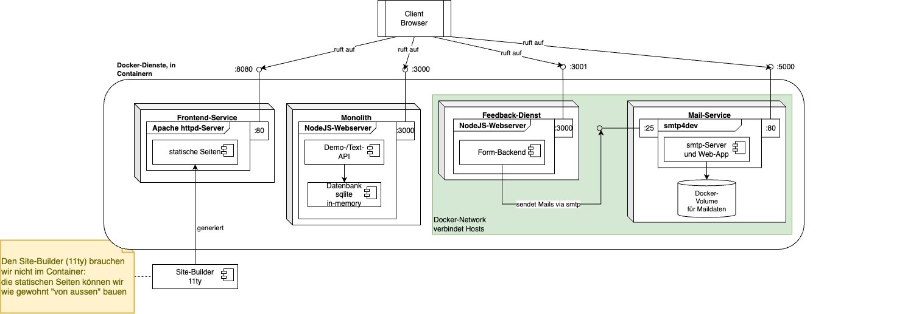

{% extends "../_base_template.html" %}
{% block title %}Lektion 6 - Container für die Entwicklung{% endblock %}

{% block sections %}
<section data-markdown>
<textarea data-template>
# <i class="fas fa-graduation-cap"></i> M347 - Dienste verbinden - Networking

## Heutiges Ziel

- Sie kennen das **Networking**-Konzept in Docker
- Sie können Container-Dienste mittels Network miteinander verbinden
- Sie haben aus dem bestehenden Monolithen den **Feedback-Formular-Dienst in einen
  eigenen Container extrahiert**, welcher von der Client-App aus (Browser) direkt angesprochen werden kann
- Sie haben einen **eigenen Mail-Dienst (anstatt ethereal) gebaut** und den Feedback-Dienst mit diesem verbunden
</textarea>
</section>


<!-- ----------------------------------------------------------------------------- -->
<section data-markdown>
<textarea data-template>
# <i class="fas fa-graduation-cap"></i> Auf dem Weg zur Microservice-Architektur

Wir erinnern uns an die Architektur der letzten Lektion:

<div class="d-flex gap-10">

<div class="flex-grow-1 flex-basis-0">

Bei diesem Szenario haben wir nun einen eigenen Frontend-Dienst, aber immer noch zahlreiche Backend-Dienste
(Feedback, API) in unserem Monolithen "gefangen":

* Der **Forms- resp. Feedback-Dienst** ist noch Teil des Monolithen
* Der **API- (und spätere Kommentar-)Dienst** ist noch Teil des Monolithen
* Ein **eigener Maildienst** ist noch nicht mit dem Forms-Dienst verbunden: Der Forms-Dienst kann keine Mails an diesen senden
</div>
</div>

<i class="far fa-hand-point-right"></i> Das heutige Ziel ist, den Forms-/Feedback-Dienst sowie den Maildienst zu extrahieren und miteinander zu verbinden.


</textarea>
</section>

<section data-markdown>
<textarea data-template>
# <i class="fas fa-graduation-cap"></i> Auf dem Weg zur Microservice-Architektur

<i class="far fa-hand-point-right"></i> Das heutige Ziel ist, den Forms-/Feedback-Dienst sowie den Maildienst zu extrahieren und miteinander zu verbinden:

  

* Dazu sollen Sie **den Feedback-Code vom Monolithen extrahieren** und
* in einen **eigenen Docker-Container verpacken** (eigenes Image dazu bauen)
* Ebenso erstellen wir einen eigenen **Maildienst** mit **smtp4dev**
* Wir exponieren die notwendigen Ports, damit der Browser die Dienste erreicht
* Wir bauen die Frontend-Applikation um, damit die korrekten URL's für die Dienste geliefert werden
* Damit der ***Feedback-Dienst** Mails versenden kann, müssen wir die Dienste miteinander verbinden: Wir erstellen ein **Docker-Network**.


</textarea>
</section>

<!-- -----------------------------------------------------------------  -->
<section data-markdown>
<textarea data-template>
# <i class="fas fa-flask"></i> Umbau - Extrahieren des Feedback-Dienstes

Als Erstes wollen wir den Feedback-Dienst, also die **`/feedback`**-Route, wiederum als eigenen Dienst extrahieren,
und diesen danach dem Frontend zur Verfügung stellen.

## 1. Extrahieren Sie den Feedback-Dienst

Wie in der letzten Lektion mit dem Fontend, wollen wir den Feedback-Dienst in einen eigenen Container verpacken. Dazu wollen wir den Monolith-Code kopieren (der kann ja schon alles),
und dann alles "rausschmeissen", was wir für den Feedback-Dienst nicht mehr benötigen:

1. Erstellen Sie einen eigenen Container (mit Dockerfile) für den Feedback-Dienst (Basis-Image: `node:20`).
2. Kopieren Sie die notwendigen Dateien vom `/monolith`-Ordner (server.js, und was noch? --> Schauen Sie sich den Code an!)
3. Minimieren Sie den neuen Server-Dienst (`server.js`), sodass dieser NUR noch den Code für den
   **`/feedback`-Dienst** beinhaltet: Schmeissen Sie unnötigen Code raus!
4. Starten Sie damit einen Container, der den Dienst über einen TCP-Port verfügbar macht!
5. Passen Sie im Frontend-Formular (formular/index.html) die URL für den Formularversand an, sodass die Applikation den Feedback-Dienst wieder findet!

==> Puh, das ist ganz schön viel! Versuchen Sie diesen Umbau (ev. mit Hilfe Ihrer Kollegen) selbständig auszuführen! Der Schlüssel dabei ist: Gehen Sie schrittweise vor!

</textarea>
</section>

<!-- -----------------------------------------------------------------  -->
<section data-markdown>
  <textarea data-template>
  # <i class="fas fa-flask"></i> Umbau - Eigener Maildienst
  
  Wir wollen nun einen zweiten Dienst erstellen: Anstelle des externen `ethereal`-Maildienstes wollen wir 
  einen lokalen Mailserver verwenden. Dazu verwenden wir [`smtp4dev`](https://github.com/rnwood/smtp4dev), ein Dummy-Mailserver für Entwickler.

  --> Ev. haben Sie dies schon in der letzten Lektion erledigt - umso besser!
  
  <div class="d-flex gap-10 flex-align-start">
  
  <div class="flex-basis-0 flex-grow-1">
  
  ### Ziel:
  
  * **`smtp4dev` als Docker-Container** bereitstellen
  
  * Konfiguration sowie Maildaten mittels eines **Docker Volumes** persistent machen
  
  * Netzwerkdienste gegen aussen exponieren:
    - Web-Oberfläche: HTTP Port 80, exponiert als Port 5000
    - Mail-Versand: SMTP Port 25, dieser soll vom Feedback-Dienst erreicht werden. Wir brauchen dazu ein Docker Network (siehe nächste Folie)
  * Mails vom **Feedback-Dienst gehen an den `smtp4dev`-Dienst** (Umkonfigurieren des Feedback-Dienstes)
  </div>
  </div>
  
  <i class="far fa-hand-point-right"></i> `smtp4dev` wird praktischerweise ebenfalls als Docker-Image bereitgestellt:
  
  <https://github.com/rnwood/smtp4dev/wiki/Installation#how-to-run-smtp4dev-in-docker>
  
  Wir erfahren dort, welche Ports exponiert werden, **sowie den Speicherort der lokalen Maildaten: `/smtp4dev`**.

--> Erstellen Sie den Container!
  
</textarea>
</section>

<section data-markdown>
<textarea data-template>
# <i class="fas fa-flask"></i> Umbau - Proxy für Backend-Zugriff, Networking

## 3: Feedback-Dienst mit smtp4dev mittels Docker Network verbinden

Die laufenden Container "leben" in isolierten Umgebungen: Sie können untereinander nicht kommunizieren. Dies ist ein
Sicherheitsfeature "by design". Damit der Feedback-Dienst Mails an den SMTP-Dienst von smtp4dev auf Port 25 senden kann, müssen wir diese mit einem Docker Network verbinden.

<https://docs.docker.com/network/>

Ein Docker-Network kann man sich als virtuellen Netzwerk-Switch vorstellen, an dem Container angeschlossen werden können. 

1. Wir geben unseren Containern "erkennbare" Namen

Beim Starten des Containers können wir einen eigenen Hostnamen definieren. Machen wir das nicht, "erfindet" Docker ev. selber einen,
und wir müssen bei jedem Container-Start unsere Applikationsparameter anpassen. Das wollen wir nicht. Wir starten also unsere Container mit richtigen Namen:

```sh
shell > docker run --name feedback -ti ....
shell > docker run --name smtp4dev -ti ....
```

2. Wir erstellen ein eigenes Docker Network

```sh
# Wir erstellen ein neues Bridge-Network namens "m347":
shell > docker network create m347
```

3. Wir verbinden die beiden Container via Netzwerk

```sh
shell > docker network connect m347 feedback
shell > docker network connect m347 smtp4dev
```

<i class="far fa-hand-point-right"></i> So können unsere Container intern via TCP-Netzwerk über den Hostnamen "miteinander reden",
unser Feedback-Dienst kann nun so konfiguriert werden, dass er den smtp4dev-Mailserver verwendet.

</textarea>
</section>

<section data-markdown>
<textarea data-template>
# <i class="fas fa-flask"></i> Zusammenfassung - neue Konzepte

Wir haben in diesem Kapitel diverse neue Konzepte eingeführt:

- **Volumes**: Anhängen von Datei-Ressourcen, z.B. ein lokales Host-Verzeichnis:<br>
  Siehe <https://docs.docker.com/storage/volumes/>

- **Port Mapping**: Host- und Container-TCP-Ports miteinaner verbinden:<br>
  Siehe <https://docs.docker.com/engine/reference/commandline/run/#publish-or-expose-port--p---expose> und <https://docs.docker.com/engine/reference/commandline/port/>

- **Networks**: Container via ein TCP-Netzwerk untereinander verbinden:<br>
  siehe: <https://docs.docker.com/network/>


--> Versuchen Sie nun selbständig, die Ziel-Architektur umzusetzen!


</textarea>
</section>

{% endblock %}
